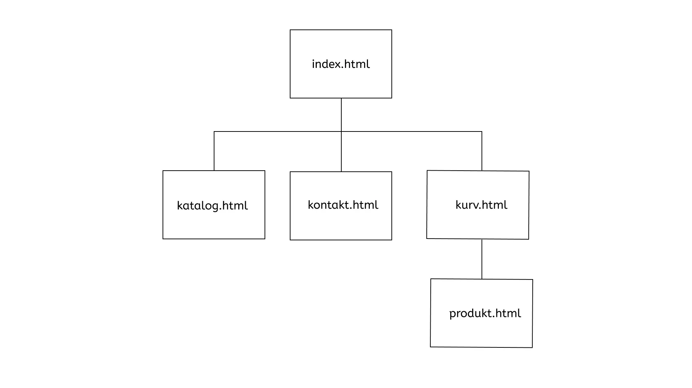

Project overview
This project was the last project of my 1st. semester at KEA. The assignement was done in groups of 4 and was a redesign project. For the assignment we worked with a company, for which we both did a redesign of their website and content production of a video and still photos.
My role
→ Reserach
→ UX / UI Design
→ Coding
The Design process
For our sitemap we chose to change up the site a bit. On Atelier Septembers original site they have a Catalog page, most likely for products that they sell. The issue is that there are no products and the only place you can find any are if you click on the basket.
Another thing is that there are only 2 totebags for sale on the site under the basket page. Therefore we chose to completely remove the basket since these totebags can be sold in store only.
We also gave the menu its own page and changed the ctatlog site to a gallery site with pictures from the cafes.
We choose to create a simple and modern with a neutral color palette with white, blue and dark blue as our primary colors. We chose to keep the company's signature colour; blue, which is the focus color on all the pages on our website. We also chose to keep the same font as the original page which is also the font they use in their logo.
Our mood board and style tiles became the basis for our visual decisions. We wanted to preserve Atelier September's aesthetic and create a website that reflects their cafes atmosphere. The use of clean images and a minimalist approach were prioritized to match the company's brand.
Sitemap before
Sitemap after
Moodboard
Styletile
Laying out our content
We followed our wireframes/prototype closely to ensure a precise implementation of elements and functions. It helped minimize errors and created a smooth development process.


The final result
We want to maintain the same target group that the company already focuses on. We chose to do this by maintaining the same aesthetics that the company uses on their Instagram, where they capture a large part of their target audience. We did this by highlighting the brand's aesthetics and atmosphere with a lot of beautiful images in the same simple style that is repeated on their Instagram to get people to the cafe.
Some major changes we made were:
→ Giving the menu its own page instead of having it on the front page
→ Removed the search option since all information has been made easily accessible
→ Changed their Catalog site to Gallery. Showcasing images from their cafes.
→ Removing the basket, since they only sell 2 totebags. These would be smarter to only sell in stores, attracting more customers.
→ Making the images in the gallery clickable so that you can swipe through them in a bigger format.
Before

After